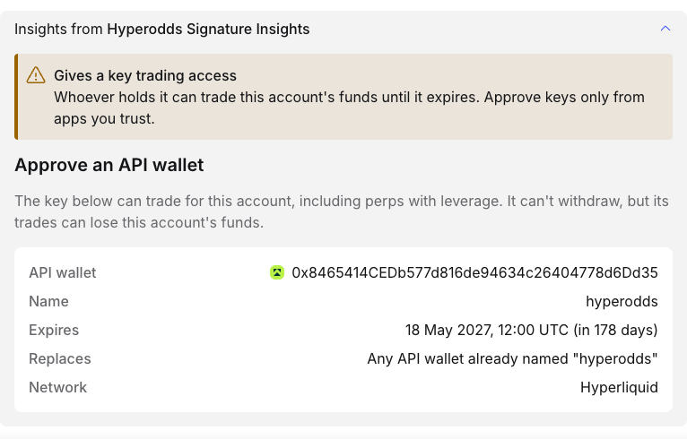

Hyperodds for MetaMask
See what a Hyperliquid signature allows before you sign it.
When a site asks MetaMask to sign a Hyperliquid request, this Snap adds a short panel to it: what the signature allows, how long that lasts, the amounts and addresses involved, and a risk level.
It covers API wallet and builder fee approvals, sends, withdrawals, transfers between your balances, staking and multi-sig changes.
Looking for MetaMask…
- Decoded on your device The Snap has no network access and stores nothing.
- Two permissions MetaMask asks you to allow both: show a panel on signature requests, and see which site sent each one.
- You still decide It never blocks a request. Orders and cancels are signed as a hash, and the panel says when it can't show the details.
